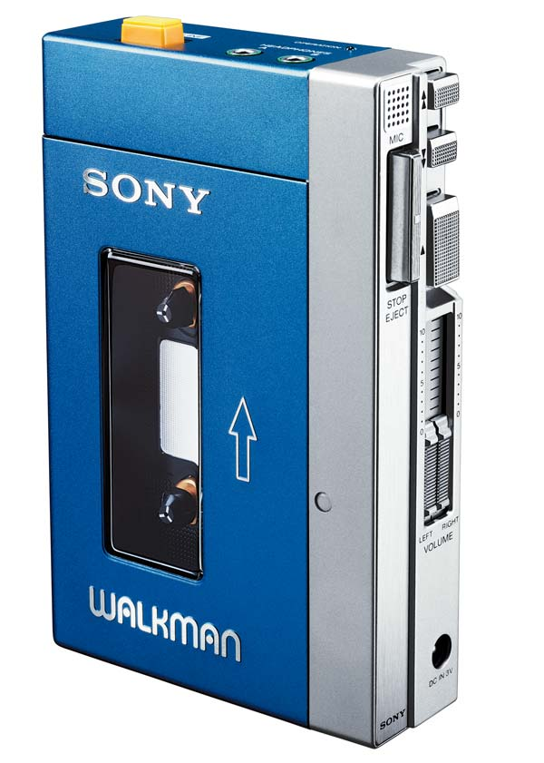
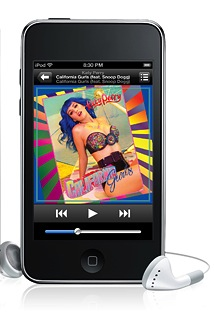
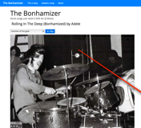
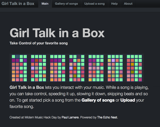
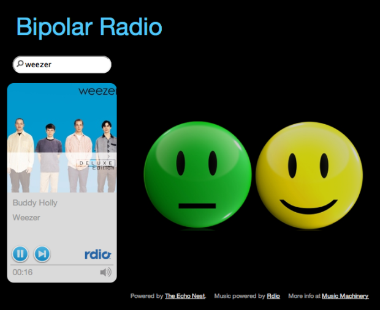

SXSW 2014 Panel Proposal
Beyond the Play Button
The Future of Listening
35 years after the first Sony Walkman shipped, today's music player still has essentially the same set of controls as that original portable music player. Even though today's music player might have a million times more music than the cassette player, the interface to all of that music has changed very little.
 In this talk we'll explore new ways that a music listener can interact with their music. First we will explore the near future where your music player knows so much about you, your music taste and your current context that it plays the right music for you all the time. No UI is needed.
Next, we'll explore a future where music listening is no longer a passive experience. Instead of just pressing the play button and passively listening you will be able to jump in and interact with the music. Make your favorite song last forever, add your favorite drummer to that Adele track or unleash your inner Skrillex and take total control of your favorite track.
Interactive Examples
Here are some experimental interfaces that allow a music listener to interact with their music.Infinite Jukebox
For when your favorite song just isn't long enough
This web app lets you upload a favorite MP3 and will then generate a never-ending and ever changing version of the song. Infinite Jukebox uses the Echo Nest analyzer to break the song into beats. It plays the song beat by beat, but at every beat there's a chance that it will jump to a different part of song that happens to sound very similar to the current beat. For beat similarity the uses pitch, timbre, loudness, duration and the position of the beat within a bar. There's a nifty visualization that shows all the possible transitions that can occur at any beat. Built at Music Hack Day Boston 2012.
The Bonhamizer
Some songs just need a little bit of Bonzo
 This app will take a track and re-render it as if John Bonham of Led Zepplin was the drummer. This app works by cutting songs up into beats and tatums, and aligning the beats to John Bonham Drum patterns.
Girl Talk in a Box
Don't just play your music, play with your music
Girl Talk in a Box lets you interact with your favorite song. You can speed it up, slow it down, skip beats, play it backwards, beat by beat. You can make it swing. You can make breaks and drops. You can upload your own song or select a song from the gallery. The Echo Nest analyzer is used to break the song into beats and tatums that are displayed as colored tiles that you can interact with. Built at MIDEM Music Hack Day 2013.
Roadtrip Mixtape
Create a mixtape of local artists for your roadtrip

Roadtrip Mixtape is an application that you can use to create road trip playlists. Type in the name of your starting and ending points, and the application will create a playlist of music by artists that from the area you are traveling through. Drive through Boston you might hear Aerosmith or Donna Summer. Drive through New Orleans and you might hear Lil Wayne or Dr. John. The application uses the Echo Nest API to get the artist location data for thousands of artists.
Bipolar Radio
Music to affect your mood
Bipolar Radio is your standard Pandora-style artist radio but with a twist. Type in an artist, and you’ll get an endless stream of music by similar artists. When you need to hear a high energy song, just click on the yellow happy face and you’ll instantly hear a high energy song by the currently playing artist. Similarly, if you’d like to chill out, just click on the green face and you’ll instantly hear a low energy song that should help you relax a bit. The hack uses the Echo Nest song data to help find the high and low energy songs. It uses a combination of loudness, energy, danceability, and tempo to sort and filter the songs by an artist into the high and low energy buckets. Build at Music Hack Day San Francisco 2011.
The 3D Music Maze
Music exploration as a game

The 3D Music Maze is a WebGL app that lets you wander around a Castle Wolfenstein style maze and sample music and enjoy the album art. If you wander through the maze long enough you may encounter an embedded game called 'Save Justin Bieber from the Death Metal'. This app is an experiment in using alternative interfaces for music exploration and discovery. I uses The Echo Nest artist similarity and playlisting APIs to build logical clusters of artists and songs. It uses the 7Digital media (album art and 30 second samples) and three.js for all the 3D goodness.